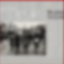

-
Blive In Music2首

-
迟到千年2首
-
春 日光9首
-
单曲-不甘寂寞1首
-

冬 未了12首
-
十年一刻10首
-
无与伦比的美丽10首
- A
- B
- C
- D
- E
- F
- G
- H
- I
- J
- K
- L
- M
- N
- O
- P
- Q
- R
- S
- T
- U
- V
- W
- X
- Y
- Z

不该(with AMEI)
周杰伦